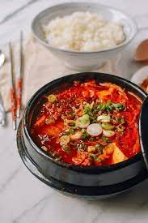

Soondubu

Description
A spicy Korean stew featuring soft tofu and kimchi as the main ingredients of the dish.
This dish is flavorful, healthy, and easy to to prepare. Including protein such as beef or pork,
this stew pairs well with a hot bowl of rice.
Ingredients
- Extra soft tofu
- Gochujang (spicy pepper paste)
- Dried Anchovies/Dried Shrimps
- Seafood Stock
- Pork Belly/Stew Beef
- Dried Konbu
- Sesame oil
- Kimchi
- Green onions
Steps
- Boil 2 cups of water, add 2 tablespoons of dried anchovies and 1 sheet of dried konbu when water starts boiling.
- Boil for approximately 30 minutes, and remove konbu. Drain seafood stock in colander.
- In a new pot, on medium high heat, add sesame oil and saute pork belly.
- Once pork belly is cooked through, add kimchi and seafood stock and gochujang.
- Bring to simmer for at least 5 minutes.
- Garnish with green onions, and enjoy